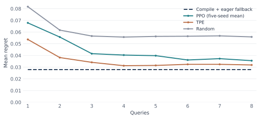
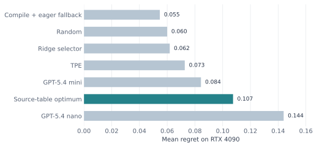

A GPU kernel-tuning benchmark with two Gymnasium tracks: search over recorded configurations, and sequential kernel-schedule editing. The published benchmark gives agents 8 trials on an unseen workload.
Compile with eager fallback has the lowest mean regret over 20 episodes, ahead of PPO and TPE.
LLM agents re-query configurations they already tried on most turns.
The best configuration stayed best on 6 of 18 workloads after switching GPUs.
Leaderboard
Configuration-bandit track: eight queries on 18 held-out workloads. Lower regret is better.
Policy
Type
Trained on
Final regret
95% interval
At 4 queries
Compile + eager fallback Lowest mean
Baseline
None
0.028
[0.002, 0.073]
0.028
Ridge selector
Learned
30 train workloads
0.032
[0.008, 0.070]
0.031
TPE
Search
None
0.032
[0.004, 0.073]
0.031
PPO
Learned
30 train workloads
0.036
[0.007, 0.073]
0.040
Random search
Search
None
0.056
[0.021, 0.101]
0.056
Policy
Type
Trained on
Final regret
95% interval
At 4 queries
PPO Lowest mean
Learned
30 train workloads
0.028
[0.008, 0.049]
0.042
TPE
Search
None
0.031
[0.004, 0.067]
0.036
Compile + eager fallback
Baseline
None
0.032
[0.002, 0.086]
0.032
GPT-5.4 mini
LLM
Pretrained
0.034
[0.001, 0.094]
0.035
Ridge selector
Learned
30 train workloads
0.040
[0.004, 0.100]
0.037
GPT-5.4 nano
LLM
Pretrained
0.063
[0.025, 0.105]
0.066
Random search
Search
None
0.091
[0.023, 0.179]
0.058
Regret is how much slower the chosen configuration is than the best one in the table, as a fraction of eager latency. A regret of 0.030 leaves 3 percentage points of eager latency available to recover.
The baseline queries torch.compile every turn and can keep eager. PPO averages five training seeds; intervals resample six shape families from the recorded results.
The published task is a contextual bandit: each action queries a finished configuration. A separate schedule-editing track makes actions transform the current kernel and change which edits are legal next.
Gymnasium
import gymnasium as gym
import drivebench_tuning
env = gym.make(
"DriveBench/OperatorTune-v0",
table_path="results/2026-11-23-operator-generalization-pro-4000/table.json",
split="test",
)
observation, info = env.reset(seed=2101)
env.close()
Environment ID
DriveBench/OperatorTune-v0
Action space
Discrete(25): one compiled implementation and 24 Triton configurations.
Observation space
task_features: Box(-inf, inf, (8,))budget: Box(0, 1, (1,))incumbent: Box(0, inf, (2,))incumbent_action: Discrete(26)action_counts: MultiDiscrete([9] * 25)action_status: MultiDiscrete([4] * 25)action_metrics: Box(0, inf, (25, 2))Dictionary entries describe the workload, remaining budget, best result and query history. Box entries use float64.
Reward
Decrease in the best valid latency cost found so far, normalized to eager.
Episode
8 trials. Repeated and failed trials consume the budget; the eighth trial terminates the episode.
Default split
Training. Set split="test" for held-out evaluation.
The configuration bandit replays recorded GPU timings on a laptop. Its live evaluator measures finished configurations on your GPU.
Sequential schedules
Edit fusion and per-stage launch settings, measure the resulting kernel, or submit it. The current schedule, legal-action mask, latest measurement and remaining time guide the next decision. This track uses fresh CUDA measurements rather than the published lookup table; it has no published GPU performance result yet.
Over 20 episodes, querying compile and retaining eager as a fallback gives lower mean regret than PPO, TPE and ridge. Its choices leave about 3 percentage points of eager latency between them and the table optimum.
Live on an RTX 4090, PPO had 8.14% lower latency than Triton’s built-in autotuner and 3.80% lower latency than compile, but 5.49% higher latency than autotuning with eager and compile available as fallbacks. Native search used 24 configurations; PPO used 8 queries.

PPO approaches TPE, while compile with eager fallback retains the lowest mean final regret.
GPT-5.4 mini re-queried a configuration on 116 of 144 turns; nano did so on 100 turns. Both finished with higher mean regret than compile with eager fallback in the one-episode comparison.
The RTX PRO 4000’s best configuration stayed best on 6 of 18 RTX 4090 workloads. Mean rank correlation was 0.301; carrying the source choice over produced 0.107 regret.

Configurations selected on the source GPU leave more headroom on the target GPU.
Replace the sampled action with your policy’s choice.
Python
import gymnasium as gym
import drivebench_tuning
with gym.make(
"DriveBench/OperatorTune-v0",
table_path="results/2026-11-23-operator-generalization-pro-4000/table.json",
split="test",
) as env:
env.action_space.seed(2101)
observation, info = env.reset(seed=2101)
done = False
while not done:
action = env.action_space.sample() # Your policy here.
observation, reward, terminated, truncated, info = env.step(action)
done = terminated or truncated
Collect one repeat on a Linux machine with an NVIDIA GPU.
Run three repeats with fresh cache directories; see the collection guide.
Submit a result
Run your policy on the test split with 8 trials and 20 episodes per workload, then open a PR with the trajectory file. We recompute regret from the table and add verified submissions to the leaderboard.